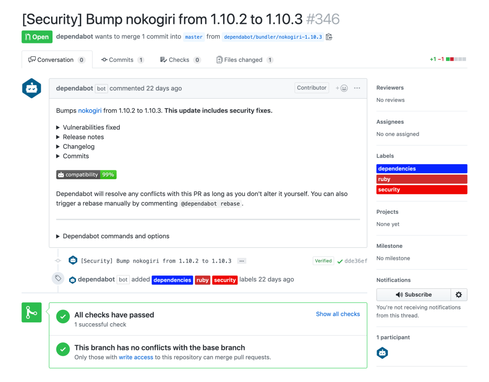

Automated Security Updates
with GitHub
What?
Dependabot has been acquired by GitHub in May 2019
Dependabot features will be integrated directly into GitHub
First integration: security fix PRs 
Why?
Modern applications rely on hundreds of open source dependencies.
Staying on top of security vulnerabilities in those dependencies requires constant attention.